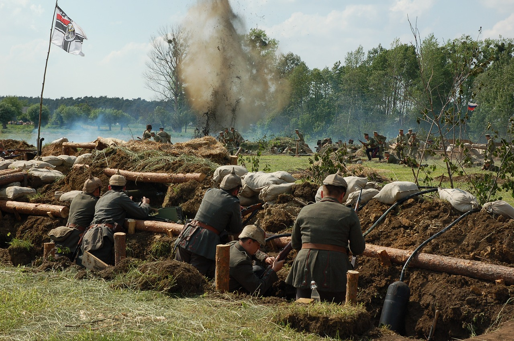

ПОПРОСИТЬ СВОЕГО ГЕНЕРАЛА ОБЪЯСНИТЬ, ЗАЧЕМ НУЖНО ВЫПОЛНЯТЬ ОПРЕДЕЛЕННУЮ ЗАДАЧУ, И ОТКАЗАТЬСЯ В СЛУЧАЕ НЕСОГЛАСИЯ НЕ УГРОЖАЕТ ЭФФЕКТИВНОСТИ АРМИИ
Правильно
«Все — от генерала до рядового — получали одинаковое жалованье, ели ту же пищу, носили одинаковую одежду. Вы могли свободно похлопать по плечу генерала, командира дивизии, попросить у него сигарету (...) Каждый отряд ополчения представлял собой демократию, а не иерархическую систему подчинения низших органов высшим. Существовала как бы договорённость, что приказы следует исполнять, но, отдавая приказ, вы отдавали его как товарищ товарищу...
Позднее стало модным ругать ополчение, и приписывать все его недостатки не отсутствию оружия и необученности, а системе равенства. (...) Журналисты, которые посмеивались над ополченцами, редко вспоминали о том, что именно они держали фронт, пока в тылу готовилась Народная армия. И только благодаря „революционной“ дисциплине отряды ополчения оставались на фронте; примерно до июня 1937 года их удерживало в окопах только классовое сознание...
В первое время меня ужасал и бесил хаос, полная необученность, необходимость минут пять уговаривать бойца выполнить приказ. Я жил представлениями об английской армии, а испанское ополчение, право, ничем не походило на английскую армию. Но учитывая все обстоятельства, нужно признать, что ополчение воевало лучше, чем можно было ожидать.»¹
Если вы захотите примера современных анархических военных, котораые работают также и успешно удерживают свои вольные территории от захвата, обратитесь к Сапатистской армии. Здесь будет к месту вспомнить исследование 2023 года, согласно которому военные инновации могут эффективно продолжаться без государства².
1. Джордж Оруэлл, «Памяти Каталонии. Эссе», Москва, 2003.
2. Vladimir Maltsev, The economics of military innovation under anarchy: The case of the Ukrainian Civil War of 1917–1921. Journal of Economic Behavior & Organization, Volume 210, 2023, Pages 180-190, ISSN 0167-2681.
Неправильно
«Все — от генерала до рядового — получали одинаковое жалованье, ели ту же пищу, носили одинаковую одежду. Вы могли свободно похлопать по плечу генерала, командира дивизии, попросить у него сигарету (...) Каждый отряд ополчения представлял собой демократию, а не иерархическую систему подчинения низших органов высшим. Существовала как бы договорённость, что приказы следует исполнять, но, отдавая приказ, вы отдавали его как товарищ товарищу...
Позднее стало модным ругать ополчение, и приписывать все его недостатки не отсутствию оружия и необученности, а системе равенства. (...) Журналисты, которые посмеивались над ополченцами, редко вспоминали о том, что именно они держали фронт, пока в тылу готовилась Народная армия. И только благодаря „революционной“ дисциплине отряды ополчения оставались на фронте; примерно до июня 1937 года их удерживало в окопах только классовое сознание...
В первое время меня ужасал и бесил хаос, полная необученность, необходимость минут пять уговаривать бойца выполнить приказ. Я жил представлениями об английской армии, а испанское ополчение, право, ничем не походило на английскую армию. Но учитывая все обстоятельства, нужно признать, что ополчение воевало лучше, чем можно было ожидать.»¹
Если вы захотите примера современных анархических военных, котораые работают также и успешно удерживают свои вольные территории от захвата, обратитесь к Сапатистской армии. Здесь будет к месту вспомнить исследование 2023 года, согласно которому военные инновации могут эффективно продолжаться без государства².
1. Джордж Оруэлл, «Памяти Каталонии. Эссе», Москва, 2003.
2. Vladimir Maltsev, The economics of military innovation under anarchy: The case of the Ukrainian Civil War of 1917–1921. Journal of Economic Behavior & Organization, Volume 210, 2023, Pages 180-190, ISSN 0167-2681.